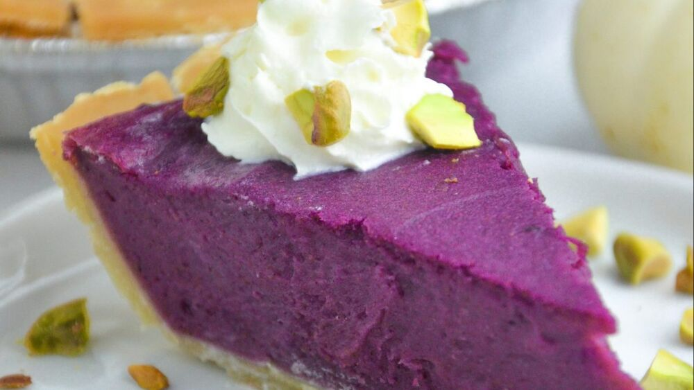

Dia 468 - Diário de bordo
Caramba, deu certo, consegui finalmente fazer algo bom nesse lugar estranho, agora sim
alguma pequena lembrança das frontrooms, mesmo não tendo essas mariposas estranhas, uma
torta é uma torta essa geleia é realmente bem gostosa, este gosto doce parece um mel com
blueberries, queria que isso tivesse para comprar na minha cidade, ainda tenho esperanças
que isso não seja um inferno por completo.
-Frank

Nome: Torta :)
Autor: Franklin Murray